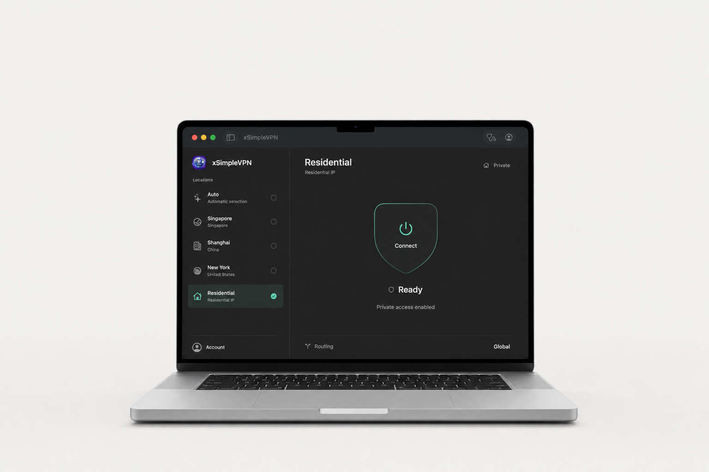

One place to connect
A clear connection control, an at-a-glance status and a location list that stays out of your way.

A simpler connection. By XM LLC.
Your connection, simplified.
At home. At work. On the move.
Mac preview: connection testing is still in progress.
Native on MacUniversal app
Apple notarized appDeveloper ID signed
Direct DMG downloadNo App Store account needed
Less in the way
A focused, native app that puts your location and connection status in one place.
A clear connection control, an at-a-glance status and a location list that stays out of your way.
A native macOS app with a collapsible sidebar. One universal download for both Apple Silicon and Intel.
Sign in when you are ready to connect. Your account determines which locations and services you can access.
Choose your connection
Explore locations in the Mac app.
Availability depends on your account.
Take it with you
On your desk or in your pocket.
No. The Mac app is distributed as a direct DMG download. You do need an Xsimple VPN account to connect. The iPhone and iPad app is downloaded through the App Store.
Open the DMG and move xSimpleVPN to Applications. Launch the app, sign in and follow the macOS prompts to authorize the VPN extension and configuration. Keep macOS security protections enabled.
The Mac app has been Developer ID signed and Apple notarized, but end-to-end connection testing is still in progress. Notarization does not certify VPN performance. Do not rely on this preview for critical connectivity; disconnect if Internet access is interrupted.
No. Residential may be visible in the location list, but connecting requires specific account authorization. Downloading the app does not grant access to this location.
Read the existing Xsimple VPN privacy policy for information about data handling and support contacts.